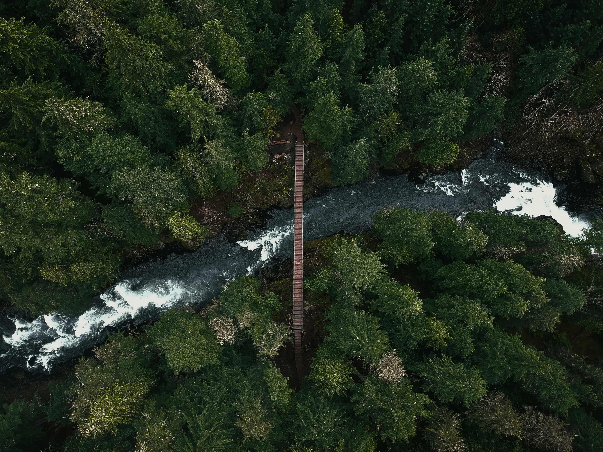
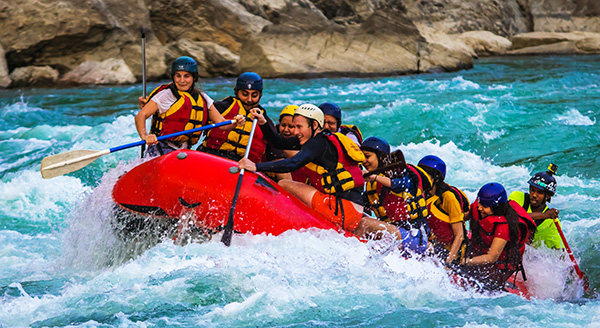

At White Water Rafting Company, we offer thrilling rafting adventures for all skill levels. Our experienced guides ensure a safe and enjoyable experience on the river.


White Water Rafting Company
History
Founded in 2006, White Water Rafting Company has been providing unforgettable rafting experiences for over 15 years. Our passion for adventure and commitment to safety has made us a trusted name in the industry.